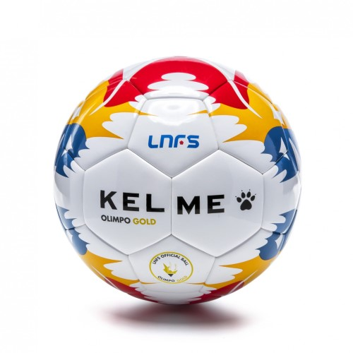

Футзальный мяч Kelme Olimpo Gold Official

Описание товара: Футзальный мяч Kelme Olimpo Gold Official
Производитель: Kelme
Страна бренда: Испания
Страна производитель: Китай
Комплектация: Мяч
Подробное описание товара:
Пришло время для мини-футбола в том месте, которого он заслуживает, на Олимпе. Мяч является олицетворением борьбы футзала за право быть олимпийским видом спорта на Олимпиаде 2020. Инновационный дизайн с отсылкой к олимпийским кольцам. Официальный мяч испанской футзальной лиги LNFS сезона 17/18.
Характеристики товара:
| Материал: | Высококачественный полиуретан + 3.8мм ЭВА | |||
| Цвет: | белый | желтый | синий | красный |
| Метод сшивания: | Термосклейка | |||
| Производитель: | Kelme | Испания | ||
| Страна производитель: | Китай | |||
| Комплектация: | Мяч | |||